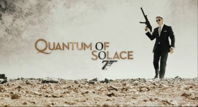
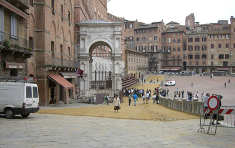
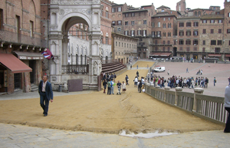

|
- QUANTUM OF SOLACE -
|
|
Titolo originale: Quantum of solace  Tradito dalla donna che amava, Vesper Lynd, l'agente James Bond cercherà di ammantare la vendetta personale con una missione che lo porterà in Austria, Italia e Sud America, intrecciando la sua investigazione con quella di Camille, donna con un passato anch'esso tormentato. Ella gli permetterà, per una semplice coincidenza investigativa, di incontrare Dominic Greene, membro di una misteriosa organizzazione e uomo d'affari senza pietà, che tenta di avere il controllo su tutte le risorse naturali, con particolare riferimento all'acqua, della Bolivia. Scontrandosi con questo pericoloso personaggio, Bond metterà in luce i torbidi intrecci tra affarismo internazionale di corporazioni senza scrupoli e i vari governi ufficiali, manipolatori in questo caso manipolati dalla organizzazione denominata Quantum (facciata affaristica della più ben nascosta organizzazione di cui Greene al più presto apparirà come pedina). La confusione creata in questi governi occidentali su una sopravvalutata area petrolifera ancora non scoperta, in realtà inesistente, nel cuore del deserto Boliviano e gestita appunto da Greene, metterà l'agente Bond nella condizione di doversi difendere, e proteggersi, dall'attacco di settori deviati di organizzazioni come CIA e MI6, corrotte da anni al loro interno da elementi di fiducia di Greene. Nella parte finale, nel cuore dell'area desertica dove Greene vorrebbe portare a termine il suo criminoso piano, in un duello serrato dove sia la vendetta privata di Bond che quella di Camille si compiranno, il disegno di Quantum e di Greene di ottenere sia il governo fantoccio sulla Bolivia sia le sue preziose risorse naturali, verrà stroncato; Bond otterrà una parziale vendetta, appunto su Greene, abbandonandolo ferito nel cuore del deserto, in piena solitudine; con un estremo atto di crudele pietà, Bond darà modo a Greene di mettere fine alla sua vita, ingerendo il contenuto di una latta di olio motore, sicuro che questo avverrà dopo almeno un lungo percorso nel deserto e travagli interiori da parte di Greene. Trasferitosi per l'ultima scena in Russia, Bond salderà il conto anche con il misterioso uomo nord-africano che, tramite l'amore deviato, portò Vesper Lynd a compiere un atto così estremo come il suo deliberato suicidio (mostrato in Casinò Royale). Bond incontra faccia a faccia quest'uomo, ma non lo uccide, e lo consegna ai servizi britannici, che lo informano così della morte di Greene nel deserto, sia per l'ingestione di olio motore sia per due misteriose pallottole conficcate nella nuca. A questo punto i servizi invitano Bond a rientrare al più presto nel rango di super-spia, e la sua risposta è: "Non me ne sono mai andato", mostrando quindi il percorso, che sembra definitivo, verso una maturità professionale di agente che, anche in questo film, gli viene spesso rimarcata come incompleta.  
Dal 12 al 19 maggio 2008 sono state girate a Siena altre riprese per concludere alcune scene d'azione del film che prevedono James Bond uscire dai bottini della città direttamente dalla Fonte Gaia di piazza del Campo durante il Palio. Lo stesso Daniel Craig assieme al regista Marc Forster hanno partecipato a questa sezione di riprese. Per ricreare i momenti del Palio di Siena è stato sparso in parte di Piazza del Campo una leggero spessore di tufo, così come viene fatto per la rievocazione storica e hanno partecipato oltre 1000 comparse per rappresentare gli spettatori del Palio. Originariamente questa scena d'azione si sarebbe dovuta concludere davanti al Duomo di Siena ma è stata cambiata perché ritenuta irrispettosa nei confronti della religiosità del luogo. |